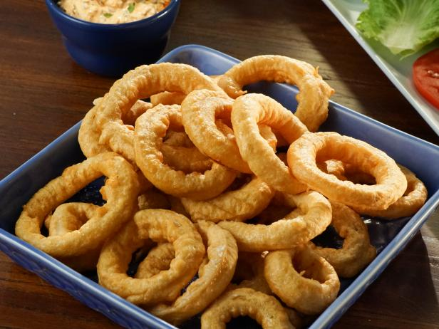

Number:+19012076041
|
Burgers - (Medium to Medium Well)
|
|---|
| Bryon Donut Burger (Only on Tuesdays and Saturdays) . . . . . . . . . . . . . . . . . . . . . . . . . . . . . . . . .9 |
| 6oz pattied, cheese, fried egg, and candied bacon in between a DONUT! |
| Bluff City Burger . . . . . . . . . . . . . . . . . . . . . . . . . . . . . . . . .9 |
| 6oz pattie. Topped with Provolone, home made slaw, candied bacon and BBQ |
| Bacon Pimento Burger . . . . . . . . . . . . . . . . . . . . . . . . . . . . . . . . .9 |
| 6oz pattie. Topped with pickle, candied bacon, tomato and our home made pimento cheese. |
| Super Burger . . . . . . . . . . . . . . . . . . . . . . . . . . . . . . . . .11 |
| 12oz pattie. Topped with mustard, chipotle aioli, pickle, lettuce, tomato, carmelized onions, smoked gouda on the top pattie, and cheddar on the bottom pattie. |
| Extreme Burger . . . . . . . . . . . . . . . . . . . . . . . . . . . . . . . . .13 |
| 18oz pattie. Same topping as the Super. Third pattie has swiss cheese. |
| Kruguer . . . . . . . . . . . . . . . . . . . . . . . . . . . . . . . . .17 |
| 30oz pattie. Same topping as the Extreme Burger. 5th pattie has Cheddar |
|
Appetizers
|
|---|
| Corn Nuggets . . . . . . . . . . . . . . . . . . . . . . . . . . . . . . . . .4 |
| Breaded‎ cream corn. Deep fried. Served with a side of chipotle aioli |
| Candied Bacon . . . . . . . . . . . . . . . . . . . . . . . . . . . . . . . . .5 |
| 3 piece Applewood Smoked Bacon candied in a salty, smokey & savory flavor mixed with a punch of goodness |
| Fried Pickle . . . . . . . . . . . . . . . . . . . . . . . . . . . . . . . . .4 |
| Hand battered, deep fried pickle chips. Served with a side of cilantro dill aioli |
| Mojo Fries or Tots . . . . . . . . . . . . . . . . . . . . . . . . . . . . . . . . .6 |
| Fries or Tots smothered in our Bacon Chorizo (Spanish sausage) Gravy topped with Smoked Gouda & Crumbled Candied Bacon |
|
Sammies
|
|---|
| Candied Bacon BLT . . . . . . . . . . . . . . . . . . . . . . . . . . . . . . . . .8 |
| Candied Bacon, lettuce, tomato, and sun dried tomato aioli. |
| Fried Catfish . . . . . . . . . . . . . . . . . . . . . . . . . . . . . . . . .9 |
| Hand breaded catfish. Deep fried. Topped with our home made Slaw and cilantro dill aioli |
| Chik Sammie . . . . . . . . . . . . . . . . . . . . . . . . . . . . . . . . .8 |
| Blacken Chik topped with Swiss, lettuce, tomato, and avocado ranch spread. |
| Grilled Cheese . . . . . . . . . . . . . . . . . . . . . . . . . . . . . . . . .8 |
| Sharp Cheddar, Smoked Gouda, topped wiith slaw and tomato |
|
Sides
|
|---|
| Mojo Chips . . . . . . . . . . . . . . . . . . . . . . . . . . . . . . . . .2 |
| Home made potato chips topped with our house seasoning |
| Side Salad . . . . . . . . . . . . . . . . . . . . . . . . . . . . . . . . .2 |
| lettuce, tomato, and red onions |
| Slaw . . . . . . . . . . . . . . . . . . . . . . . . . . . . . . . . .2 |
| Mayo based home made slaw |
| Fries / Tots / Onion Rings . . . . . . . . . . . . . . . . . . . . . . . . . . . . . . . . .2 |
| They're just regular tots/onion rings/fries |
|  |
|
Desserts
|
|---|
| Elvis Dipper . . . . . . . . . . . . . . . . . . . . . . . . . . . . . . . . .5 |
| Deep fried Nutta butta cookies, with slices of banana on the inside. Served with cream |
| Uh-Oh's . . . . . . . . . . . . . . . . . . . . . . . . . . . . . . . . .4 |
| Deep fried Oreo's. Don't know what flavors your gonna get til you bite into 'em. |
| Homemade Chocolate Truffle Cake . . . . . . . . . . . . . . . . . . . . . . . . . . . . . . . . .6 |
| Gluten Free - Chocolate Truffle Cake . . . . . . . . . . . . . . . . . . . . . . . . . . . . . . . . .7 |
Family owned and operated by the Bun family since 2014, we started humbly but with a grand plan: To create the finest hand craft burger and Sammies this world has ever tasted, end of story. And with nothing but a dream, we've grown and exploded to this point where you're reading this right now and probably salivating. Located only in Memphis area. With a brick and mortar in Bartlett, TN, and Two Food Trucks; where one is always situated at the Memphis Food Truck Park. Our secret? It's not one, admittedly. The best ingredients such as hand crafting our own hamburger pattie, using Angus, Sirloin, and Brisket is a big part. Making all of our sauces and sides in house or outsourcing it Locally. An unrelenting love for the burger and Sammies is the other big part. Between those two, we think we pretty much have our burger and Sammie bases covered.
Number:+9012076041
Email: mojocafebartlett@gmail.com
Address: 7124 Hwy 64 #101
Instagram: Memphis_Mojo_Cafe
Twitter: @MemphisMojoCafe
Facebook: Memphis Mojo Cafe